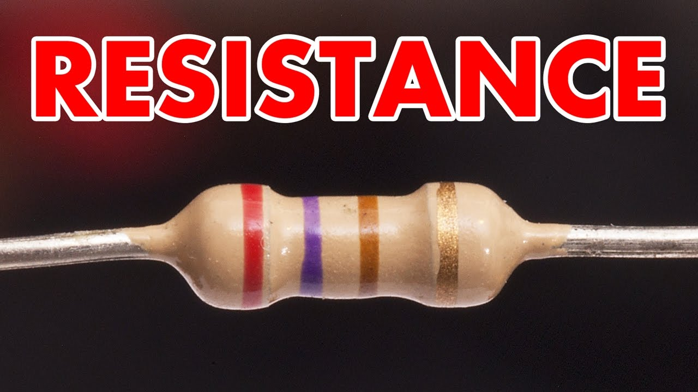
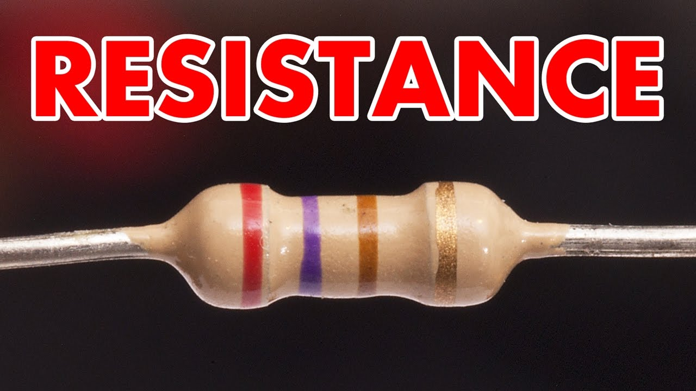

this is some electrical parts like...
resistance
Resistance is a measure of the opposition to current flow in an electrical circuit.
Resistance is measured in ohms, symbolized by the Greek letter omega (Ω). Ohms are named after Georg Simon Ohm (1784-1854), a German physicist who studied the relationship between voltage, current and resistance. He is credited for formulating Ohm's Law.

All materials resist current flow to some degree. They fall into one of two broad categories:

Conductors: Materials that offer very little resistance where electrons can move easily. Examples: silver, copper, gold and aluminum.

Insulators: Materials that present high resistance and restrict the flow of electrons. Examples: Rubber, paper, glass, wood and plastic.

capacitance
A capacitor is a passive two-terminal electronic component that stores electrical energy in an electric field. The effect of a capacitor is known as capacitance. While some capacitance exists between any two electrical conductors in proximity in a circuit, a capacitor is a component designed to add capacitance to a circuit. The capacitor was originally known as a condenser or condensator.[1] The original name is still widely used in many languages, but not commonly in English.
The physical form and construction of practical capacitors vary widely and many types of capacitor are in common use. Most capacitors contain at least two electrical conductors often in the form of metallic plates or surfaces separated by a dielectric medium. A conductor may be a foil, thin film, sintered bead of metal, or an electrolyte. The nonconducting dielectric acts to increase the capacitor's charge capacity. Materials commonly used as dielectrics include glass, ceramic, plastic film, paper, mica, air, and oxide layers. Capacitors are widely used as parts of electrical circuits in many common electrical devices. Unlike a resistor, an ideal capacitor does not dissipate energy. When an electric potential, a voltage, is applied across the terminals of a capacitor, for example when a capacitor is connected across a battery, an electric field develops across the dielectric, causing a net positive charge to collect on one plate and net negative charge to collect on the other plate. No current actually flows through the dielectric. However, there is a flow of charge through the source circuit. If the condition is maintained sufficiently long, the current through the source circuit ceases. If a time-varying voltage is applied across the leads of the capacitor, the source experiences an ongoing current due to the charging and discharging cycles of the capacitor.
inductance
n electromagnetism and electronics, inductance describes the tendency of an electrical conductor, such as coil, to oppose a change in the electric current through it. When an electric current flows through a conductor, it creates a magnetic field around that conductor. A changing current, in turn, creates a changing magnetic field. From Faraday's law of induction, any change in total magnetic field (magnetic flux) through a circuit induces an electromotive force (voltage) across that circuit, a phenomenon known as electromagnetic induction. From Lenz's law, this induced voltage, or "back EMF" in a circuit, will be in a direction so as to oppose the change in current which created it. So changes in current through a conductor will react back on the conductor itself through its magnetic field, creating a reverse voltage which will oppose any change to the current. Inductance, {\displaystyle L} L, is defined as the ratio between this induced voltage, {\displaystyle v} v, and the rate of change of the current {\displaystyle i(t)} i(t) in the circuit.[1]
{\displaystyle L:=-v\left({di \over dt}\right)^{\!-1}\;\;\Rightarrow \;\;v=-L{di \over dt}} {\displaystyle L:=-v\left({di \over dt}\right)^{\!-1}\;\;\Rightarrow \;\;v=-L{di \over dt}}
This proportionality factor L depends on the geometric shape of the circuit conductors and the magnetic permeability of nearby materials. An inductor is an electrical component which adds inductance to a circuit. It typically consists of a coil or helix of wire. .
The term inductance was coined by Oliver Heaviside in 1886.[2] It is customary to use the symbol {\displaystyle L} L for inductance, in honour of the physicist Heinrich Lenz.[3][4] In the SI system, the unit of inductance is the henry (H), which is the amount of inductance which causes a voltage of 1 volt when the current is changing at a rate of one ampere per second. It is named for Joseph Henry, who discovered inductance independently of Faraday
Resorse link
resistance
Resistance is a measure of the opposition to current flow in an electrical circuit. Resistance is measured in ohms, symbolized by the Greek letter omega (Ω). Ohms are named after Georg Simon Ohm (1784-1854), a German physicist who studied the relationship between voltage, current and resistance. He is credited for formulating Ohm's Law. All materials resist current flow to some degree. They fall into one of two broad categories: Conductors: Materials that offer very little resistance where electrons can move easily. Examples: silver, copper, gold and aluminum. Insulators: Materials that present high resistance and restrict the flow of electrons. Examples: Rubber, paper, glass, wood and plastic.
capacitance
A capacitor is a passive two-terminal electronic component that stores electrical energy in an electric field. The effect of a capacitor is known as capacitance. While some capacitance exists between any two electrical conductors in proximity in a circuit, a capacitor is a component designed to add capacitance to a circuit. The capacitor was originally known as a condenser or condensator.[1] The original name is still widely used in many languages, but not commonly in English. The physical form and construction of practical capacitors vary widely and many types of capacitor are in common use. Most capacitors contain at least two electrical conductors often in the form of metallic plates or surfaces separated by a dielectric medium. A conductor may be a foil, thin film, sintered bead of metal, or an electrolyte. The nonconducting dielectric acts to increase the capacitor's charge capacity. Materials commonly used as dielectrics include glass, ceramic, plastic film, paper, mica, air, and oxide layers. Capacitors are widely used as parts of electrical circuits in many common electrical devices. Unlike a resistor, an ideal capacitor does not dissipate energy. When an electric potential, a voltage, is applied across the terminals of a capacitor, for example when a capacitor is connected across a battery, an electric field develops across the dielectric, causing a net positive charge to collect on one plate and net negative charge to collect on the other plate. No current actually flows through the dielectric. However, there is a flow of charge through the source circuit. If the condition is maintained sufficiently long, the current through the source circuit ceases. If a time-varying voltage is applied across the leads of the capacitor, the source experiences an ongoing current due to the charging and discharging cycles of the capacitor.
inductance
n electromagnetism and electronics, inductance describes the tendency of an electrical conductor, such as coil, to oppose a change in the electric current through it. When an electric current flows through a conductor, it creates a magnetic field around that conductor. A changing current, in turn, creates a changing magnetic field. From Faraday's law of induction, any change in total magnetic field (magnetic flux) through a circuit induces an electromotive force (voltage) across that circuit, a phenomenon known as electromagnetic induction. From Lenz's law, this induced voltage, or "back EMF" in a circuit, will be in a direction so as to oppose the change in current which created it. So changes in current through a conductor will react back on the conductor itself through its magnetic field, creating a reverse voltage which will oppose any change to the current. Inductance, {\displaystyle L} L, is defined as the ratio between this induced voltage, {\displaystyle v} v, and the rate of change of the current {\displaystyle i(t)} i(t) in the circuit.[1] {\displaystyle L:=-v\left({di \over dt}\right)^{\!-1}\;\;\Rightarrow \;\;v=-L{di \over dt}} {\displaystyle L:=-v\left({di \over dt}\right)^{\!-1}\;\;\Rightarrow \;\;v=-L{di \over dt}} This proportionality factor L depends on the geometric shape of the circuit conductors and the magnetic permeability of nearby materials. An inductor is an electrical component which adds inductance to a circuit. It typically consists of a coil or helix of wire. . The term inductance was coined by Oliver Heaviside in 1886.[2] It is customary to use the symbol {\displaystyle L} L for inductance, in honour of the physicist Heinrich Lenz.[3][4] In the SI system, the unit of inductance is the henry (H), which is the amount of inductance which causes a voltage of 1 volt when the current is changing at a rate of one ampere per second. It is named for Joseph Henry, who discovered inductance independently of Faraday